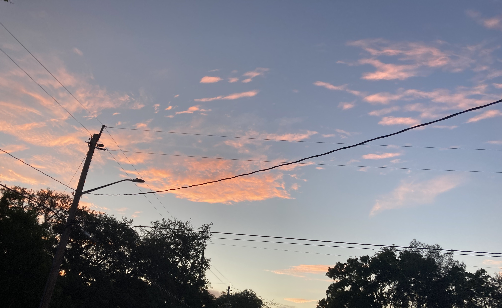
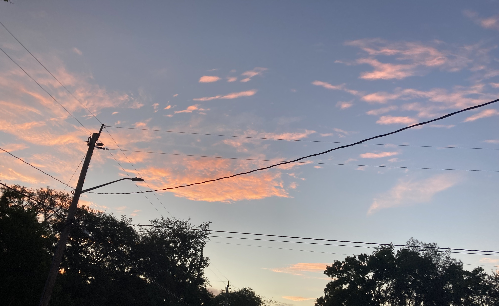

A software engineer based in Florida

A software engineer based in Florida

A directional voice chat (VoIP) client & server for Minecraft, with possible developer support for using in other games or applications in the future. Similar to Mumble, except specifically tailored for it's use case and controlled more on the server side than the client side; meaning that you as the server host have much more control.